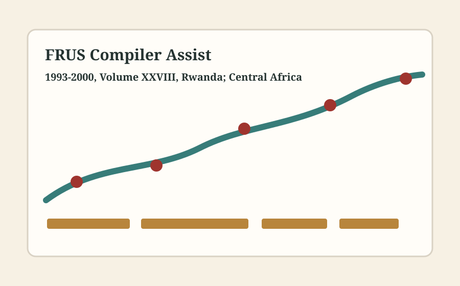

Being Researched • synced May 29, 2026
Foreign Relations of the United States, 1993–2000, Volume XXVIII, Rwanda; Central Africa
A compiler-facing workspace for research lanes, source leads, document-candidate buckets, persons queues, chronology anchors, and open verification work.

Research Lanes
NARA CatalogResearch Dataset
| Lead | Category | Use | Status |
|---|---|---|---|
| Official history.state.gov volume page | Official volume | Track title, status, and future publication metadata. | Seeded |
| Status of the Series | Official status | Confirm the volume remains in the Being Researched production stage. | Seeded |
| NARA Scout query | Search tool | Run a first-pass search for Rwanda; Central Africa. | Seeded |
| NARA Catalog search | Archives | Check catalog-visible record descriptions and scope notes. | Seeded |
| William J. Clinton Presidential Library research portal | Presidential library | Check Clinton Library finding aids, digital collections, staff files, and FOIA releases. | Seeded |
| State Department FOIA Virtual Reading Room | FOIA | Search released State Department records and source-note copy candidates. | Seeded |
| Strobe Talbott FOIA Manifest | FOIA manifest | Cross-check Clinton-era high-level diplomatic records and document-page leads. | Seeded |
| CIA CREST Reading Room | Declassified intelligence | Search intelligence releases and cross-reference collection identifiers. | Seeded |
| Candidate bucket | Repository | Status | Action |
|---|---|---|---|
| Official volume record and publication metadata | history.state.gov | Reference | Watch for title, status, and chapter updates. |
| NARA catalog-visible candidate records | National Archives | Search queue | Export promising record descriptions and add file-unit identifiers. |
| Presidential library meeting and daily-file leads | William J. Clinton Presidential Library research portal | Search queue | Check daily diary, staff files, and finding aids for dated contacts. |
| Strobe Talbott FOIA cross-check set | State FOIA | Search queue | Compare manifest hits against volume lanes and source-note needs. |
| Intelligence release cross-check set | CIA Reading Room | Search queue | Search CREST/Reading Room terms and capture candidate document metadata. |
| Date | Anchor | Note | Status |
|---|---|---|---|
| 1993-01-01 | Scope start anchor | Begin chronology review for 1993-2000. | Seeded |
| 2000-12-31 | Scope end anchor | End chronology review for 1993-2000. | Seeded |
| TBD | Rwanda decision points | Add public statements, high-level contacts, interagency meetings, and crisis milestones. | Queue |
| TBD | Central Africa decision points | Add public statements, high-level contacts, interagency meetings, and crisis milestones. | Queue |
| Role | Status | Action | Era |
|---|---|---|---|
| President of the United States | Roster target | Verify names, dates, title changes, and source-note form before moving to a print roster. | 1993-2000 |
| Secretary of State | Roster target | Verify names, dates, title changes, and source-note form before moving to a print roster. | 1993-2000 |
| National Security Advisor | Roster target | Verify names, dates, title changes, and source-note form before moving to a print roster. | 1993-2000 |
| Deputy Secretary of State | Roster target | Verify names, dates, title changes, and source-note form before moving to a print roster. | 1993-2000 |
| Executive Secretary of the Department of State | Roster target | Verify names, dates, title changes, and source-note form before moving to a print roster. | 1993-2000 |
| FRUS volume compiler | Roster target | Verify names, dates, title changes, and source-note form before moving to a print roster. | 1993-2000 |
| Assistant Secretary for African Affairs | Roster target | Verify names, dates, title changes, and source-note form before moving to a print roster. | 1993-2000 |